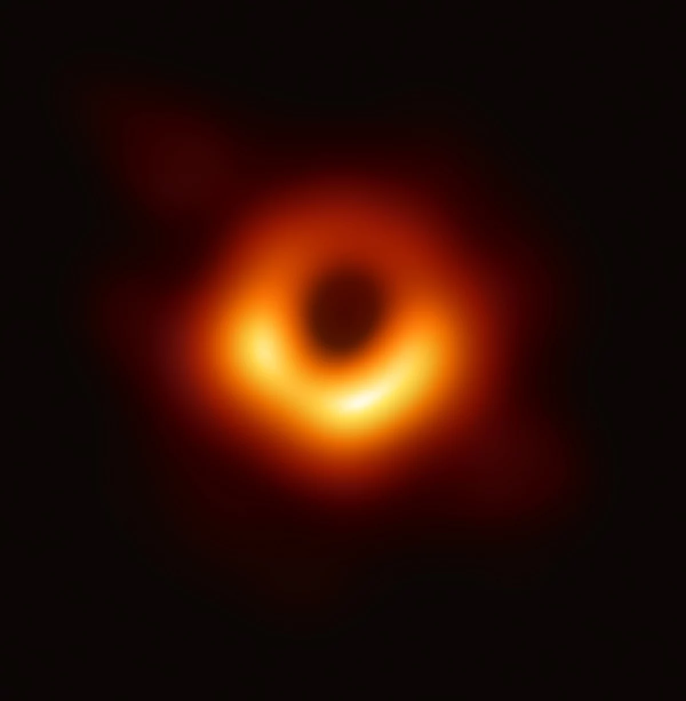

#file 004
----------///-----------------------------------------------------//----
Earth Is A Prison Planet
File 04 explanation/Black hole relation with earth/
----------------------------
Black hole

Stephen Hawking and Jacob Bekenstein put forward theoretical arguments based on general relativity and quantum field theory that not only appeared to be inconsistent with information conservation but which did not account for the information loss and which stated no reason for it. Specifically, Hawking's calculations[4] indicated that black hole evaporation via Hawking radiation does not preserve information. Today, many physicists believe that the holographic principle (specifically the AdS/CFT duality) demonstrates that Hawking's conclusion was incorrect, and that information is in fact preserved.[5] In 2004 Hawking himself conceded a bet he had made, agreeing that black hole evaporation does in fact preserve information.